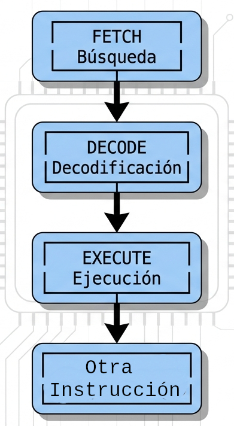
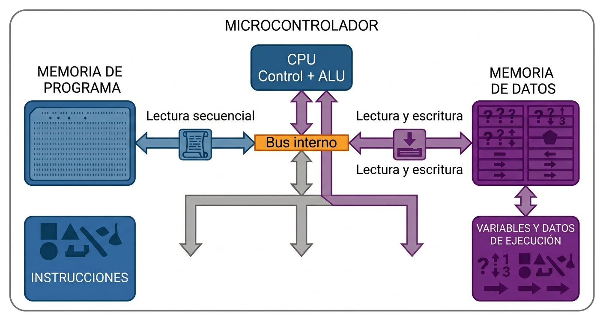
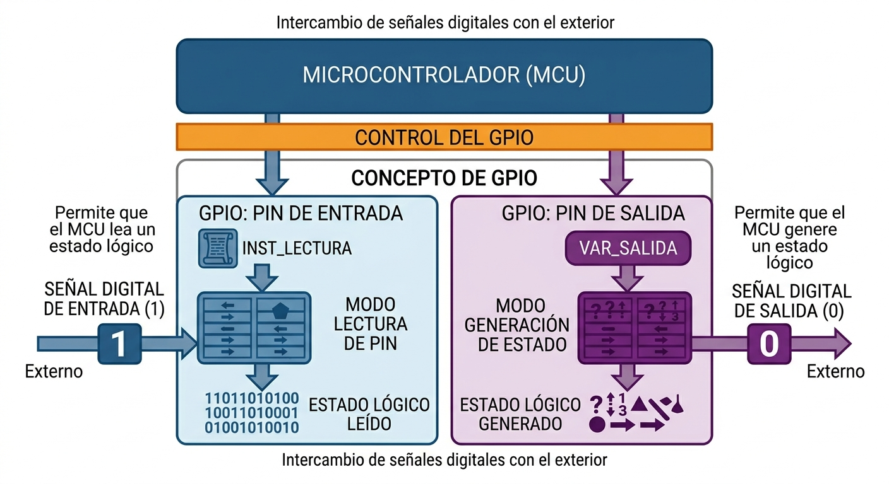
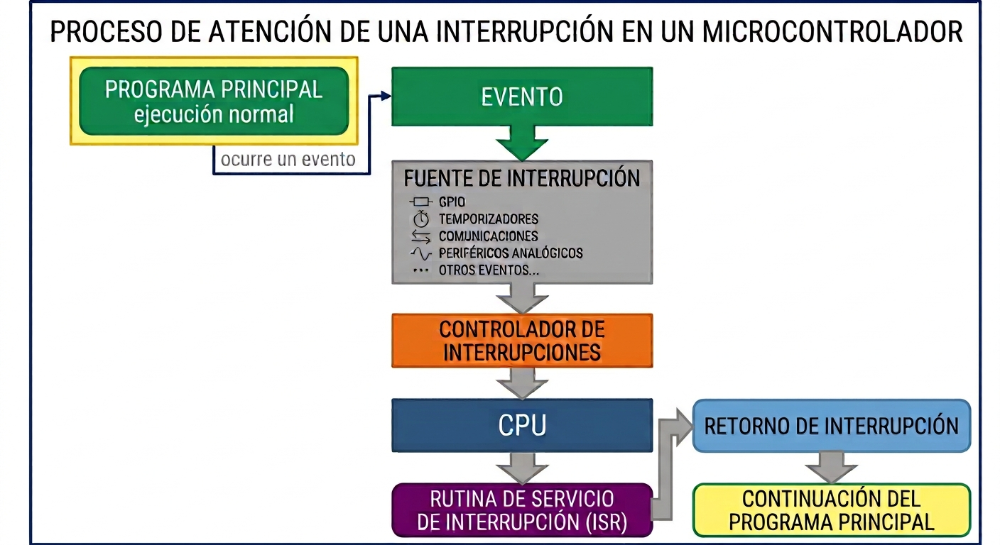

ARQUITECTURA INTERNA DE UN MICROCONTROLADOR
INTRODUCCIÓN
En otro artículo vimos que un microcontrolador (MCU) integra en un mismo circuito la capacidad de procesamiento, la memoria y diferentes periféricos. Ahora corresponde analizar cómo se organiza internamente ese conjunto y qué función cumple cada bloque.
Un microcontrolador no es solamente una CPU dentro de un encapsulado. Para que pueda funcionar como controlador de un sistema embebido necesita disponer de recursos que le permitan almacenar el programa y los datos, recibir información del exterior, generar señales, medir intervalos de tiempo, responder a eventos y comunicarse con otros dispositivos.
Por eso, cuando se estudia la arquitectura interna de un MCU, es necesario observar la relación entre varios bloques:
- CPU;
- memoria;
- GPIO;
- temporizadores;
- sistema de interrupciones;
- buses;
- periféricos.
El microcontrolador integra un procesador con bloques de memoria, E/S digitales y analógicas, temporizadores y otros periféricos, todos ellos comunicados mediante un bus interno del sistema.
Este artículo desarrolla esos conceptos desde una perspectiva general, sin asociarlos a una familia concreta de microcontroladores. Los nombres de registros, buses, controladores y periféricos pueden cambiar entre fabricantes y dispositivos, pero los conceptos funcionales son ampliamente aplicables.
```1. VISIÓN GENERAL DE LA ARQUITECTURA INTERNA
Un microcontrolador integra varios bloques de hardware que trabajan conjuntamente para ejecutar una aplicación embebida.
Una forma práctica de entender la arquitectura de un MCU es pensar en él como un conjunto de bloques especializados que trabajan coordinadamente.
Una representación conceptual de un microcontrolador puede ser la siguiente:
Este esquema es deliberadamente general. Un MCU concreto puede tener más bloques, menos bloques o diferentes formas de interconectarlos.
Por ejemplo, algunos microcontroladores incorporan ADC, DAC, interfaces de comunicación, PWM, DMA, watchdog, RTC y otros recursos. Otros pueden carecer de algunos de ellos.
Este modelo permite entender la función de cada elemento sin depender de una arquitectura específica.
- La CPU ejecuta las instrucciones del programa y realiza el procesamiento.
- La memoria almacena el programa y los datos necesarios para su funcionamiento.
- Los GPIO proporcionan entradas y salidas digitales para interactuar con circuitos externos.
- Los temporizadores y contadores permiten realizar funciones relacionadas con tiempo, conteo y generación de señales.
- El sistema de interrupciones permite que determinados eventos soliciten la atención de la CPU.
- Los periféricos proporcionan funciones especializadas, como conversión analógica, comunicación o generación de señales.
- Los buses y sistemas de interconexión permiten que CPU, memoria y periféricos intercambien información.
La arquitectura concreta varía entre microcontroladores. Por eso, conceptos como la cantidad de memoria, organización de buses, estructura de interrupciones, funciones de GPIO y características de los temporizadores deben verificarse siempre en la documentación del dispositivo específico.
La idea fundamental que debemos conservar es esta:
Un microcontrolador es un sistema integrado de procesamiento, memoria e interfaces hardware especializadas. La CPU ejecuta el software, mientras que los periféricos realizan funciones específicas y permiten que ese software interactúe con el sistema físico.
Este concepto será la base para comprender posteriormente GPIO, temporizadores, interrupciones, ADC, PWM y protocolos de comunicación con mucha mayor facilidad.
La selección de estos recursos depende del propósito para el que se diseñó el dispositivo. Los componentes adicionales de un microcontrolador se eligen según la finalidad del controlador.
2. LA CPU DENTRO DEL MICROCONTROLADOR

La CPU (Central Processing Unit) es el bloque encargado de ejecutar las instrucciones del programa.
En un artículo anterior vimos que el funcionamiento básico de la CPU puede entenderse mediante el ciclo:
Fetch → Decode → Execute
es decir:
Búsqueda → Decodificación → Ejecución.
La CPU realiza operaciones aritméticas y lógicas mediante la ALU (Arithmetic Logic Unit) y utiliza los demás recursos del microcontrolador para obtener instrucciones, leer datos y controlar los periféricos.
Por ejemplo, una aplicación podría ejecutar conceptualmente la siguiente secuencia:
Leer dato
↓
Procesar dato
↓
Comparar resultado
↓
Tomar una decisión
↓
Modificar una salida
La CPU ejecuta las instrucciones necesarias para realizar esta secuencia, pero no necesita realizar directamente todas las operaciones físicas.
Si el sistema tiene que leer una entrada digital, por ejemplo, la CPU accede al periférico correspondiente. Si necesita generar una señal periódica, puede configurar un temporizador. Si necesita recibir datos mediante una interfaz de comunicación, utilizará el periférico de comunicación correspondiente.
Esta separación de funciones es fundamental para comprender la arquitectura de un MCU.
3. MEMORIA DEL MICROCONTROLADOR
La CPU necesita memoria para ejecutar un programa y trabajar con los datos que utiliza durante su funcionamiento.
La memoria proporciona almacenamiento para las instrucciones, los datos y otra información necesaria durante el funcionamiento del sistema. En términos generales, un microcontrolador dispone de diferentes tipos de memoria con funciones distintas.
Los microcontroladores pueden utilizar diferentes tecnologías y organizaciones de memoria.
Entre ellas se encuentran:
- Flash;
- SRAM;
- EEPROM;
- ROM;
- OTP;
- otros tipos de memoria no volátil o volátil.
No todos los MCU utilizan la misma combinación.
Los recursos de memoria se optimizan considerando factores como velocidad, costo, durabilidad y eficiencia energética.
En microcontroladores modernos es habitual encontrar memoria no volátil para almacenar el programa y memoria volátil para los datos de ejecución. La implementación concreta depende del dispositivo.
3.1. Memoria para el programa
El programa contiene las instrucciones que la CPU debe ejecutar.
Una memoria no volátil permite conservar el programa cuando se desconecta la alimentación.
Dependiendo del dispositivo, puede implementarse mediante Flash, ROM, OTP u otra tecnología no volátil.
En muchos microcontroladores esta función se realiza mediante memoria Flash, aunque no todos los dispositivos utilizan exactamente la misma tecnología.
La CPU obtiene las instrucciones desde el espacio de memoria correspondiente y las ejecuta.
3.2. Memoria para los datos
Durante la ejecución del programa, la CPU necesita almacenar información temporal como variables, resultados intermedios, estados y otros datos.
Por ejemplo:
- valores obtenidos de sensores;
- resultados intermedios;
- variables;
- estados del sistema;
- contadores;
- datos recibidos mediante una comunicación.
Para ello, los microcontroladores suelen disponer de memoria de datos, frecuentemente implementada mediante SRAM. La RAM permite realizar operaciones de lectura y escritura durante la ejecución del programa.
La diferencia funcional puede resumirse así:

La cantidad disponible depende del microcontrolador. No todos los MCU ofrecen la misma capacidad ni utilizan exactamente la misma organización de memoria.
3.3. Organización de la memoria
La forma en que la CPU accede a instrucciones y datos depende de la arquitectura.
En una organización tipo Von Neumann, instrucciones y datos utilizan un espacio o camino de memoria compartido.
En una organización tipo Harvard, instrucciones y datos utilizan espacios o caminos diferenciados.
También existen arquitecturas que combinan características de ambos modelos.
Por tanto, la organización de memoria no debe asociarse automáticamente con una única familia de microcontroladores.
4. ACCESO A LOS PERIFÉRICOS
La CPU necesita algún mecanismo para configurar y utilizar los periféricos.
En muchos microcontroladores, los periféricos disponen de registros de control y estado que permiten al software configurar su funcionamiento y consultar sus condiciones.
Por ejemplo, para utilizar un temporizador, el software puede tener que configurar:
- fuente de reloj;
- valor de conteo;
- modo de funcionamiento;
- condiciones de comparación;
- habilitación de una interrupción.
Los detalles exactos dependen del dispositivo.
En algunas arquitecturas los periféricos están integrados en un espacio de direcciones de memoria; en otras existen mecanismos de acceso diferentes. Por eso no es correcto asumir que todos los microcontroladores utilizan exactamente el mismo modelo de acceso.
Por ejemplo, Microchip documenta arquitecturas donde los periféricos y las E/S están asignados al espacio de memoria y se accede a ellos mediante registros de funciones especiales. (Ayuda para Desarrolladores)
5. GPIO: INTERFAZ DIGITAL CON EL EXTERIOR
Los GPIO (General-Purpose Input/Output) son uno de los recursos más importantes de un microcontrolador.
Su función básica es permitir que el MCU intercambie señales digitales con el exterior.
Un pin configurado como entrada permite que el microcontrolador lea un estado lógico.
Un pin configurado como salida permite que el microcontrolador genere un estado lógico.
Conceptualmente:

Esta función convierte al GPIO en una interfaz directa entre el procesamiento digital y el hardware externo.
Por ejemplo, un GPIO puede utilizarse para:
- leer un pulsador;
- detectar el estado de un interruptor;
- encender o apagar un LED;
- controlar una señal digital;
- leer una señal procedente de otro circuito.
Microchip describe los pines GPIO como el vínculo fundamental entre el microcontrolador y el mundo exterior y señala que pueden configurarse como entradas o salidas digitales. (Microchip)
5.1. GPIO como entrada
Cuando un pin funciona como entrada, el microcontrolador obtiene información procedente de un circuito externo.
Por ejemplo:
Pulsador │ ▼ GPIO ───► CPU
El programa puede consultar el estado de ese GPIO y tomar una decisión.
Dependiendo del microcontrolador, una entrada puede disponer de características adicionales, como resistencias pull-up o pull-down, filtros o detección de cambios de estado. Estas funciones no están disponibles de la misma manera en todos los dispositivos.
5.2. GPIO como salida
Cuando un pin está configurado como salida, el microcontrolador controla su estado lógico.
CPU │ ▼ GPIO │ ▼ LED / circuito externo
El software puede modificar el valor de la salida para generar un nivel lógico alto o bajo.
Sin embargo, el GPIO no debe interpretarse como una fuente de alimentación general. La corriente máxima que puede entregar o absorber un pin depende de las especificaciones eléctricas concretas del microcontrolador.
Este aspecto debe consultarse siempre en la hoja de datos del dispositivo.
6. TEMPORIZADORES Y CONTADORES
Los temporizadores (timers) son periféricos de hardware destinados a realizar funciones relacionadas con el tiempo y el conteo.
Su funcionamiento básico consiste en utilizar una señal de reloj para incrementar, decrementar o comparar un valor interno.
Una aplicación sencilla puede ser generar una acción después de determinado número de ciclos de reloj.
Los temporizadores pueden utilizarse para distintas funciones, dependiendo del dispositivo:
- generar intervalos de tiempo;
- contar eventos;
- generar interrupciones;
- producir señales periódicas;
- generar PWM;
- medir intervalos;
- capturar eventos.
6.1. Temporizador frente a retardo por software
Es importante diferenciar un temporizador de hardware de un retardo implementado mediante software.
Un retardo por software mantiene ocupada a la CPU ejecutando instrucciones durante un período determinado.
En cambio, un temporizador de hardware puede realizar el conteo independientemente de que la CPU esté ejecutando otras instrucciones.
De forma conceptual:
Retardo por software:
CPU ──► ejecuta instrucciones ──► espera ──► continúa
Temporizador de hardware:
CPU ──► configura timer ──► continúa trabajando │ ▼ TIMER │ ▼ evento
Esta diferencia es importante en sistemas embebidos porque permite que la CPU utilice su tiempo de procesamiento para otras tareas.
7. INTERRUPCIONES
Una interrupción permite que un evento solicite la atención de la CPU.
En lugar de que el programa tenga que comprobar continuamente si ha ocurrido un evento, el hardware puede generar una solicitud de interrupción cuando se produce una condición determinada.
Una fuente de interrupción puede estar asociada, dependiendo del MCU, con:
- GPIO;
- temporizadores;
- comunicaciones;
- periféricos analógicos;
- otros eventos internos o externos.

En un microcontrolador típico, cuando ocurre una interrupción:
- El periférico genera una solicitud de interrupción.
- Controlador de interrupciones / sistema de excepciones determina si la interrupción está habilitada y su prioridad.
- La CPU acepta la interrupción.
- El procesador guarda el contexto necesario.
- El mecanismo de excepción/interrupción obtiene la dirección de la rutina correspondiente.
- La CPU comienza a ejecutar la ISR desde la memoria de programa.
- Después de ejecutar la rutina de suspensión, la CPU debe realizar un retorno de excepción/interrupción y reanudar el programa que estaba ejecutando antes de la interrupción.
La organización exacta de las interrupciones, sus prioridades y su gestión dependen de la arquitectura concreta.
Por ejemplo, algunas familias disponen de un controlador centralizado de interrupciones y de prioridades configurables, mientras que otras utilizan estructuras diferentes. Microchip documenta diferentes mecanismos de interrupción según la familia de MCU. (Ayuda para Desarrolladores)
La CPU atiende la interrupción mediante el mecanismo definido por la arquitectura y posteriormente continúa con el flujo normal del programa.
Este mecanismo resulta especialmente útil cuando el sistema debe reaccionar rápidamente ante eventos externos o internos.
8. BUSES INTERNOS
Los diferentes bloques de un microcontrolador necesitan comunicarse entre sí para intercambiar instrucciones, datos y señales de control.
La CPU debe acceder a memoria y periféricos. Los periféricos pueden necesitar intercambiar información con otros bloques. Todo ello requiere una infraestructura de interconexión interna o bus interno del sistema. El bus o sistema de interconexión proporciona el mecanismo mediante el cual la CPU, la memoria y los periféricos intercambian información.
En algunos dispositivos esta infraestructura está formada por uno o varios buses. En otros puede utilizarse una estructura de interconexión mucho más compleja, con diferentes caminos, prioridades y mecanismos de acceso.
Por tanto, el término bus interno es útil para introducir el concepto, pero no debe interpretarse como una implementación universal. La organización concreta depende del microcontrolador.
La arquitectura puede definir diferentes caminos para instrucciones, datos y accesos a periféricos.
Por ejemplo, algunas arquitecturas utilizan buses separados para determinadas funciones o diferentes niveles de interconexión.
También pueden existir diferentes velocidades de operación o diferentes niveles de interconexión.
9. PERIFÉRICOS
Los periféricos son bloques de hardware especializados que amplían las capacidades de la CPU.
Los periféricos permiten implementar funciones que no necesitan ser realizadas exclusivamente mediante instrucciones ejecutadas directamente por el núcleo de procesamiento.
No todos los MCU tienen los mismos periféricos.
Entre los más habituales que podemos encontrar en un MCU están:
- GPIO, para entradas y salidas digitales;
- Temporizadores (timer) y contadores (counter), para medir intervalos o generar eventos;
- PWM, para generar señales de ancho de pulso variable;
- UART/USART, para comunicación serie;
- SPI, para comunicación serie síncrona;
- I²C, para comunicación serie mediante bus;
- CAN, en dispositivos que lo incorporan;
- ADC, para conversión analógico-digital;
- DAC, para conversión digital - analógico;
- watchdog, para supervisar el funcionamiento del sistema;
- RTC, para funciones relacionadas con tiempo;
- DMA, para determinadas transferencias de datos sin intervención continua de la CPU;
- otros periféricos especializados.
Esta lista no debe interpretarse como una configuración obligatoria. Cada microcontrolador dispone de una combinación concreta de periféricos.
9.1. Interacción entre CPU y periféricos
Un punto fundamental para comprender un microcontrolador es que la CPU y los periféricos tienen funciones diferentes, pero trabajan coordinadamente.
Supongamos un sistema que necesita medir periódicamente una señal y activar una salida.
Una posible secuencia sería:
Timer
│
│ genera evento
▼
Interrupción
│
▼
CPU
│
│ procesa
▼
Resultado
│
▼
GPIO
│
▼
Actuador
En este ejemplo:
- el timer proporciona la referencia temporal;
- el sistema de interrupciones informa a la CPU de que ocurrió el evento;
- la CPU ejecuta el procesamiento;
- el GPIO proporciona la salida hacia el circuito externo.
Ninguno de estos bloques sustituye a los demás. Cada uno cumple una función específica.
9.2. La configuración de los periféricos
Los periféricos no suelen funcionar simplemente por estar presentes en el microcontrolador. Normalmente deben configurarse.
La configuración puede incluir parámetros como:
- modo de funcionamiento;
- fuente de reloj;
- dirección de los GPIO;
- valores iniciales;
- habilitación de interrupciones;
- frecuencia;
- selección de entradas o salidas;
- parámetros de comunicación.
Esta configuración se realiza normalmente mediante registros de control asociados al periférico.
Conceptualmente:
Software │ ▼ Registros de configuración │ ▼ Periférico │ ▼ Función hardware
Esta relación entre software, registros y hardware es fundamental en la programación de microcontroladores.
Cuando un programa configura un GPIO, un temporizador o una interfaz de comunicación, en realidad está modificando el estado de determinados elementos de hardware mediante el mecanismo de configuración proporcionado por el MCU.
La principal ventaja de integrar estos recursos dentro del mismo circuito es que el microcontrolador puede proporcionar una plataforma relativamente completa para controlar un sistema.
Este diagrama no representa una arquitectura física concreta. Es un modelo conceptual para comprender las relaciones funcionales entre los bloques.
Un MCU real puede tener varias instancias de un mismo periférico, diferentes buses, controladores especializados y otros bloques que no aparecen aquí.
10. RELACIÓN ENTRE ARQUITECTURA Y APLICACIÓN
La arquitectura interna de un microcontrolador está directamente relacionada con la aplicación para la que se utilizará.
Un sistema que solamente necesita leer algunos interruptores y controlar LEDs puede requerir pocos periféricos.
Otro sistema puede necesitar:
- varios canales analógicos;
- múltiples temporizadores;
- PWM;
- comunicaciones serie;
- interrupciones;
- memoria suficiente para un programa más grande.
Por eso los fabricantes ofrecen microcontroladores con diferentes combinaciones de recursos.
La documentación de un MCU permite determinar exactamente qué recursos están disponibles y cuáles son sus limitaciones. No se debe asumir que porque un periférico exista en una familia estará necesariamente presente en todos los dispositivos.
Esta variación es visible incluso dentro de las familias de un mismo fabricante. Por ejemplo, las tablas de Microchip muestran diferencias importantes en cantidad de memoria, GPIO, interfaces y temporizadores entre distintos dispositivos. (Microchip Docs)
10.1. Arquitectura interna y diseño de software
La arquitectura del hardware condiciona directamente la forma en que se escribe el software.
El programa necesita:
- configurar el microcontrolador;
- configurar los periféricos;
- procesar los datos;
- responder a eventos;
- controlar las salidas.
Por ejemplo, un programa puede iniciar configurando un GPIO como entrada, un temporizador para generar un evento periódico y una interrupción para atender ese evento.
Después, el programa principal puede realizar otras tareas mientras el hardware se encarga de la temporización.
Esta relación entre hardware y software es una de las características centrales de los sistemas embebidos.
El programador no trabaja únicamente con instrucciones de la CPU. También debe conocer los recursos hardware que está controlando.
11. ARQUITECTURA INTERNA COMO MODELO DE ESTUDIO
Para estudiar cualquier microcontrolador nuevo, independientemente del fabricante, resulta útil seguir una secuencia.
Primero se identifica el núcleo de procesamiento.
Después se estudia la organización de memoria.
A continuación se identifican los recursos de entrada y salida.
Después se revisan los temporizadores y contadores.
Luego se estudia el sistema de interrupciones.
Finalmente se analizan los buses y periféricos de comunicación, además de otros bloques disponibles.
Este enfoque permite pasar de una arquitectura desconocida a una estructura que resulta familiar.
Para trabajar realmente con un microcontrolador no basta con conocer el nombre de sus periféricos.
La documentación del dispositivo debe consultarse para conocer, entre otras cosas:
- cantidad de memoria;
- organización de memoria;
- cantidad de GPIO;
- funciones disponibles en cada pin;
- características eléctricas;
- temporizadores disponibles;
- fuentes de interrupción;
- interfaces de comunicación;
- registros de configuración;
- límites de frecuencia;
- consumo;
- modos de bajo consumo.
Los ejemplos de documentación técnica de Microchip muestran por qué es necesario consultar la documentación específica de cada dispositivo: las características de los periféricos y de la memoria varían incluso entre diferentes familias y modelos. (Microchip Docs)
Por ello, los conceptos explicados en este artículo deben entenderse como principios generales, mientras que los detalles de implementación deben obtenerse siempre de la documentación oficial del MCU utilizado.